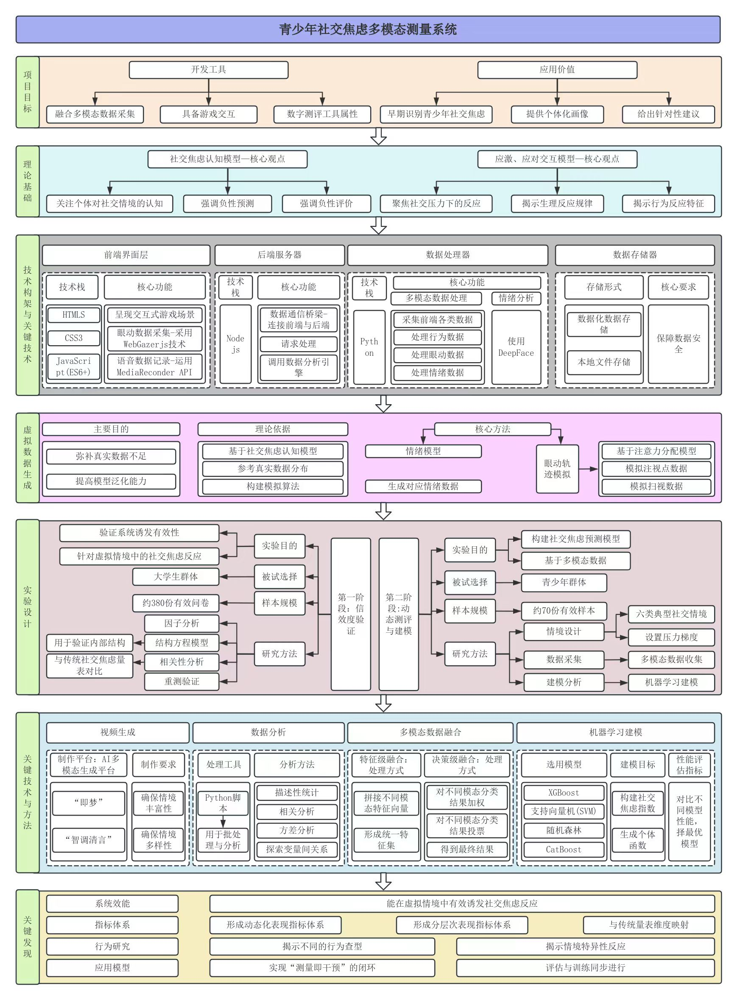
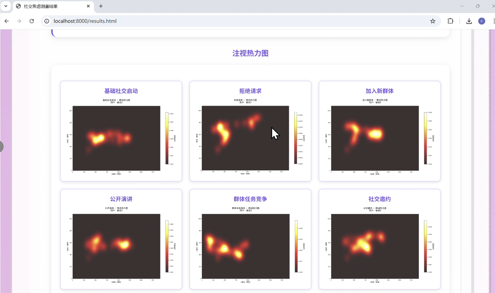
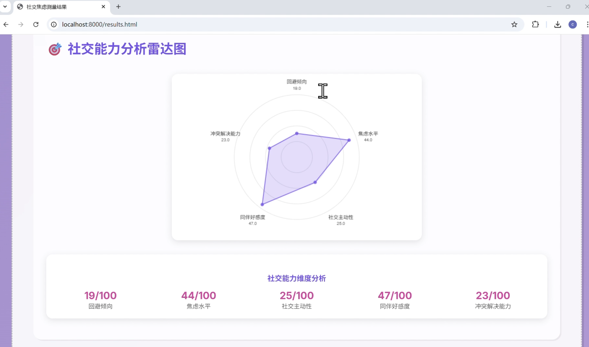
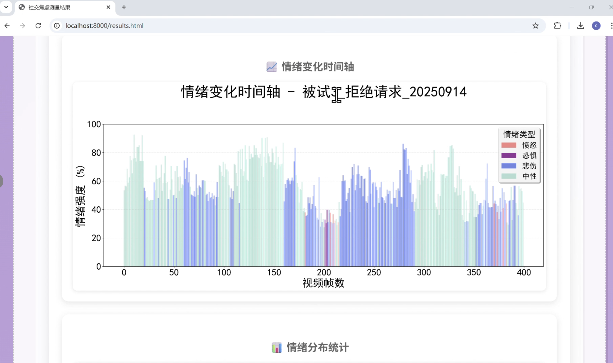
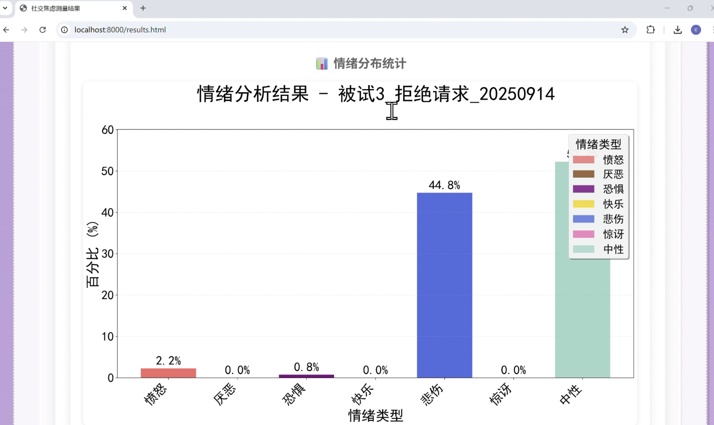

打破传统，
在自然状态下捕捉社交真实。
本项目开发了一套基于严肃游戏的青少年社交焦虑多模态动态测量系统。针对传统自陈量表存在的主观偏差与生态效度不足，我们同步采集语音、眼动、生理及行为等多模态数据，实现"测量即干预"的闭环设计。
每一级台阶，都是一次对内心边界的试探。
从行为表征到心理特质，我们用多模态数据重构社交焦虑的高生态识别工具。
本项目开发了一套基于严肃游戏的青少年社交焦虑多模态动态测量系统。针对传统自陈量表存在的主观偏差与生态效度不足，我们同步采集语音、眼动、生理及行为等多模态数据，实现"测量即干预"的闭环设计。
系统深度融合社交焦虑认知模型（CAM）与应激—应对交互理论。我们对负性评价恐惧 (FNE)与社交回避苦恼 (SAD)等经典量表进行深度维度解构，将其转化为游戏中的压力梯度变量。
通过设计"静息基线、基础选择、进阶互动、动态决策、评价恐惧、社交邀约"六大典型情境，实现了从静态文字题项到动态心理诱发场景的科学转化，确保测评逻辑具备严谨的心理学根基。
项目基于 300名以上青少年 的真实测试数据构建了多模态实证数据库。在场景设计前期，我们广泛采集了社交回避及苦恼量表 (SADS)、儿童社交焦虑量表 (SASC)及青少年自我评价量表等多维度数据。
通过对这些海量样本进行探索性分析 (Exploratory Analysis)，我们识别出影响青少年社交焦虑的关键行为特征词，并以此为底层数据支撑，逆向指导虚拟社交情境的压力参数设定，确保了系统对真实社交行为的高预测力。
项目采用定量统计 + 定性评估的双重校验路径。在定量维度，通过结构方程模型 (SEM)和因子分析验证系统指标与标准量表间的高效映射，并通过重测信度确保测量结果跨时间的一致性。
在定性维度，引入心理学专家评审与深度用户访谈，多视角验证了虚拟情境的生态代表性与受测者在中高压力任务下的真实沉浸感。
三大技术突破，重构社交焦虑测评范式
突破传统单一问卷局限，同步采集眼动轨迹、语音特征、生理指标与行为数据，构建立体化评估矩阵。
以游戏化交互降低被测者防御心理，在沉浸式虚拟社交场景中捕捉真实应激反应，提升生态效度。
首创测评-干预闭环设计，实时反馈调节策略，将传统诊断工具转化为个性化心理健康管理平台。
分层模块化设计，实现数据采集、分析与干预的一体化协同。

前端交互层、数据采集层、算法分析层与干预反馈层的四层架构设计。
通过渐进暴露的脱敏范式构建阶梯式社交测量环境
确立个体的注视点基本特征，排除设备误差。在无压力状态下进行视觉注意力的标准化采集。
Calibration & Baseline
低唤醒社交场景，测试受测者在日常简单互动中的视觉分配偏向与首个动作反应。
Basic Social Selection
场景复杂度提升，引入更多社交线索。观察受测者在非结构化对话中的回避频率。
Advanced Interaction
模拟连续社交任务。当互动进入深层阶段，个体的认知负荷与社交焦虑特征开始显现。
Deepening Interaction
典型高压场景。在被注视的压力下，个体的生理唤醒与视觉回避达到峰值。
Public Speaking Stress
在多人竞争环境下，测试个体的社会排斥感与竞争焦虑，量化行为决策。
Group Competition
最高压力的社交决策。面对被拒绝的风险，个体的防御机制与调节能力得到最终评估。
Social Invitation
通过阶梯获取的行为样本将被汇总为可视化的专业报告。

分析个体在不同压力阶段对面部特征的回避倾向。

基于阶梯表现的社交焦虑综合评估，量化个体的应激水平。

基于游戏表现自动生成的五大社交维度评估。

追踪社交决策全过程的情绪反应动态，Stage 4~5 出现明显峰值。

各阶梯阶段下不同情绪类型的强度分布与相对占比。
点击下方视频，观看系统的完整多模态交互流程与干预逻辑演示。